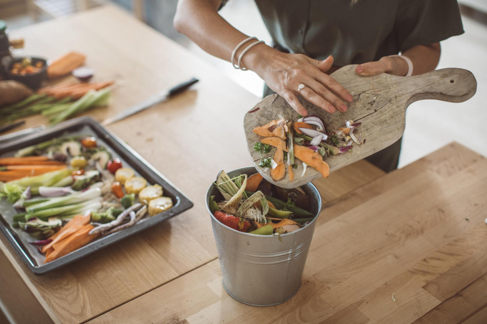

Discover the Natural Goodness with Us!
#Feel the Essence of PURE FRESHNESS.
Welcome to greenMart.lk, your gateway to the verdant wonders of Sri Lanka's organic bounty. Immerse yourself in a symphony of flavors and aromas sourced directly from our island's fertile soils. From the misty heights of our tea plantations to the sun-drenched fields of our spice gardens, each product at greenMart.lk is a testament to our dedication to sustainability and purity. Discover the essence of Sri Lanka's harvest in every handpicked fruit, fragrant spice, and wholesome grain. Join us in embracing a healthier lifestyle while supporting local farmers and preserving our precious ecosystems. Indulge in the essence of nature's goodness with greenMart.lk, where every bite tells a story of freshness, quality, and sustainability. Let your journey to wellness starts here. Cultivate a healthier lifestyle with greenMart.lk. From farm to table, we're committed to providing you with the finest organic produce sourced sustainably from Sri Lanka's fertile lands. Join us in supporting local farmers and preserving our environment. Shop with confidence. Shop with greenMart.lk.
Surf in to Following Content Pages
Benefits
Discover the numerous health benefits of embracing organic foods.
Read More
Labels
Explore the meaning behind organic labels and certifications.
Read More

LifeStyle
Embrace a holistic organic lifestyle, integrating nutritious foods.
Read More

Practices
Stay updated on the latest trends in organic farming practices.
Read More